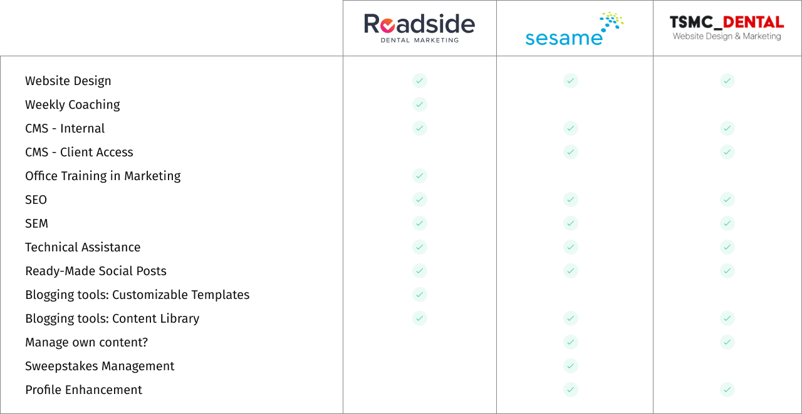
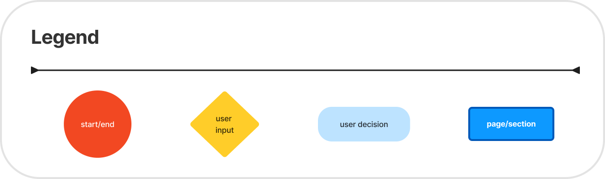
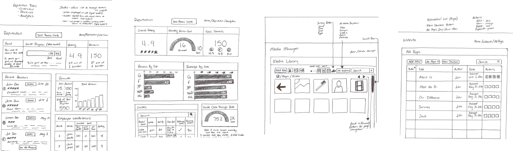

SaaS, Healthcare 
Patientmatic - Driving Practice Growth with Instant Online Presence and Seamless Patient Booking

SaaS, Healthcare
About the Project
Patientmatic is a platform that simplifies patient management for dental practices, focusing on appointment scheduling, data management, and communication. The user-friendly interface improves accessibility and clinic operations, enhancing patient engagement and satisfaction. The design aimed to provide a seamless experience for both providers and patients.
View DemoIndustry
SaaS, Healthcare (Dental Practices)
Agency
Clickagee
Year
2019
Roles
Research & Discovery
Wireframing
Prototyping
UI/UX Design
Interaction & Visual Design
Tools
Adobe XD
Trello
Adobe CC
Illustrator
Photoshop
Streamlined and intuitive screens designed for seamless patient and dental clinic management.
01. Start
The project aimed to improve patient management in dental practices, which often struggle with appointment scheduling, data tracking, and communication. Patientmatic was developed as a comprehensive platform to streamline these processes through a single interface. My involvement began with understanding user needs and identifying the best design solutions to enhance the overall user experience.
02. Research
The research phase was crucial in ensuring the success of the Insellerate mobile app. It involved understanding the client’s needs, the market landscape, and the users' requirements. This phase provided the foundation for informed design decisions, ensuring that the final product met user expectations and business goals.
The primary client for this platform was dental practices looking to modernize their operations. The market required a product that could handle both administrative and patient-facing tasks with ease.
There are 3 predefined users.
I conducted a competitor analysis of other healthcare management platforms to identify best practices and areas for improvement, focusing on intuitive interfaces, ease of use, and mobile responsiveness.
Through user research and interviews with dental professionals, I identified key pain points like complicated workflows and inefficient data entry systems. I used this feedback to refine the platform’s design.
Dental clinics struggled with disjointed systems, leading to inefficiencies in scheduling, patient data management, and communication.
Existing platforms lacked user-friendly interfaces, making it challenging for dental professionals to manage tasks effectively.
Patients faced difficulties in scheduling appointments and accessing medical information due to non-intuitive designs.
Research highlighted the demand for a comprehensive solution combining appointment scheduling, communication, and data management.
Dentist & Clinic Owner
GOALS: Streamline patient scheduling, improve clinic efficiency, and ensure high-quality patient care.
FRUSTRATIONS: Inefficient appointment systems, difficulty tracking patient history, and limited time for patient engagement.
NEEDS: A user-friendly system to manage appointments, track patient data, and simplify day-to-day operations.
Patient & Working Professional
GOALS: Schedule dental appointments easily, receive timely reminders, and access medical records online.
FRUSTRATIONS: Long waiting times, difficulty booking appointments, and unclear communication from clinics.
NEEDS: A seamless platform for scheduling, receiving updates, and communicating with the clinic.
03. Strategy & Planning
The sitemap process was pretty straightforward. I’ve started thinking of the dashboard as the main container for almost all my features. Then I’ve defined the primary and secondary navigation.

At this point, I’ve identified the two tasks I’ve then tested during usability tests phase:
Designing the task flows for adding a new profile and creating a new site in Patientmatic involved simplifying user interactions. For profiles, I focused on clear, error-free data entry, while site creation balanced customization with ease of use. Both flows were designed to guide users step-by-step, ensuring a smooth, intuitive experience without overwhelming them with too many choices.

04. Design Process
I developed wireframes that outlined the platform’s core features, focusing on user-friendly navigation and visual hierarchy. Interactive prototypes were created to test the flow of appointment scheduling and patient communication, ensuring they were intuitive.
In the early stages of designing Patientmatic, I created hand-sketched wireframes to outline the platform's core functionalities and user flows. These sketches served as a quick and flexible way to visualize layout ideas, prioritize key features, and ensure alignment with user needs. They helped identify potential design challenges early on, setting a strong foundation for further refinement in digital wireframes and prototypes. This approach streamlined collaboration and provided a clear starting point for the platform’s development.
After analyzing the hand-sketched wireframes, I created low-fidelity digital wireframes to refine functionality and navigation, enabling rapid iteration and aligning the structure with user needs before moving to higher fidelity designs.
The visual design for Patientmatic focused on creating a clean, intuitive interface tailored to the needs of dental professionals and patients. By using a balanced color palette, clear typography, and visually distinct elements, the design enhanced readability and accessibility across the platform.
Icons and subtle animations were incorporated to guide users through tasks seamlessly, while maintaining a professional and welcoming aesthetic. The visual hierarchy was carefully crafted to emphasize essential features, ensuring a cohesive and engaging user experience.
05. Conclusion
My journey through this project provided several key insights.
Recognizing the importance of understanding dental professionals' workflows and patient expectations to create a solution that bridges operational gaps.
Designing simplified and intuitive user flows for complex processes, such as appointment scheduling and patient data management.
Maintaining a cohesive visual identity across the platform to enhance usability, align with the brand, and improve user trust.
Incorporating user feedback at every stage, ensuring the platform effectively addressed pain points and evolved with user needs.